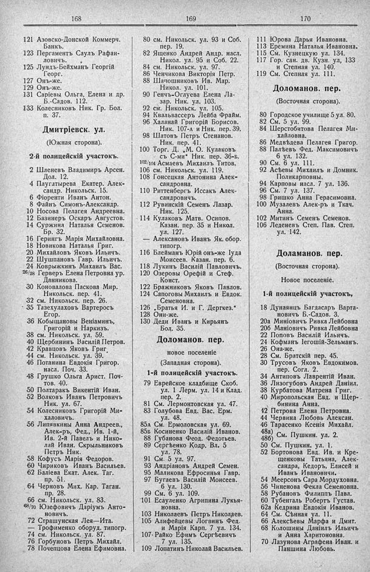

Лист источника 188
Скан

Распознанный текст
168
121 Азовско-Донской Коммерч.
Банкъ.
123 Пергаментъ Саулъ Рафаи-
ловичъ.
125 Лундъ-Бейхманъ Георгій
Георг.
127 Онъ-же.
129 Онъ-же.
131 Саріевы Ольга, Елена и др.
Б.-Садов. 112.
133 Колесниковъ Ник. Гр. Бол.
п. 37.
Дмитріевск. ул.
(Южная сторона).
2-й полицейскій участокъ.
2 Шленевъ Владимиръ Арсен.
Дол. 12.
4 Плугатырева Екатер. Алек-
сандр. Никольск. 15.
6 Фіюренти Иванъ Антон.
8 Файнъ Симонъ-Александр.
10 Носова Пелагея Андреевна.
12 Базинеръ Оскаръ Августов.
14 Суржина Наталья Семенов.
Бр. 32.
16 Герингъ Марія Михайловна.
18 Новикова Наталья Григ.
20 Михайловъ Яковъ Ильичъ.
22 Шушпановъ Гавр. Ильичъ.
24 Коврыжкинъ Михаилъ Вас.
26/28 Герверъ Елена Петровна ур.
Данникова.
30 Коновалова Паскова Мир.
Никольск. пер. 41.
32 см. Никольск. пер. 26.
35 Тазехулаховъ Вартеросъ
Егор.
36 Кобыщановы Веніаминъ,
Григорій и Наркизъ.
38 см. Никольск. ул. 59.
40 Щербининъ Василій Петров.
42 Кравцовъ Яковъ Григ.
44 см. Никольск. ул. 39.
46 Потанина Евдокія Григор.
насл. Поч. 33.
48 Грушко Ольга Арист. Поч-
тов. 40.
50 Полтаракъ Викентій Иван.
52 Волковъ Иванъ Петровичъ
Ник. ул. 67.
54 Колесниковъ Григорій Ми-
халовичъ.
56 Липнякины Анна Андреев.,
Алек-ръ, Фед., Ив. 1-й,
Ив. 2-й Павелъ и Нико-
лай Иван. Скрыльниковъ
Петръ Ник.
58 Кофусъ Марія Федоров.
60 Чириковъ Иванъ Васильев.
62 Баліева Екат. Алек. Таг.
пр. 51.
64 Черновъ Мих. Кар. Таган.
пр. 28.
66 см. Никольск. ул. 83.
68/70 Юзефовичъ Даріумъ Анто-
новичъ.
72 Страшунская Лея—Ита.
— Трофименко оборуд. типогр.
74 см. Никольск. ул. 87.
76 Горбуновъ Петръ Михайл.
78 Почепцова Елена Ефимовна.
169
80 см. Никольск. ул. 93 и Соб.
пер. 19.
82 Яшенко Андрей Андр. насл.
Никол. ул. 95 и Соб. 22.
84 см. Никольск. ул. 97.
86 Ченчикова Викторія Петр.
88 Шапошниковъ Ив. Мар.
Никол. ул. 101.
90 Генчъ-Оглуева Елена Ла-
зар. Ник. ул. 103.
92 см. Никольск. ул. 105.
94 Квальвассеръ Лейба Фрайм.
96 Халанай Григорій Борисов.
Ник. 107-а и Ник. пер. 39.
98 Шатовъ Петръ Стенанов.
Ник. пер. 41.
100 Торг. Д. „М. О.. Кулаковъ
съ С-ми“ Ник. пер. 36-б.
102/104 Асмаевъ Михаилъ Титов.
106 см. Никольск. ул. 119.
108 Гонсецкая Антонина Алек-
сандровна.
110 Риттенбергъ Иссакъ Алек-
сандровичъ.
112 Рувинскій Семенъ Лазар.
Ник. 125.
114 Кулаковъ Матв. Осипов.
Казан. пер. 35 и Никол.
ул. 127.
— Алексановъ Иванъ Як. обор.
типогр.
116 Блейманъ Юрій онъ-же Іуда
Моисеев. Казан. пер. 6.
118 Лукинъ Василій Павловичъ.
120 Озеровы Орефій и Стеф.
Конст.
122 Бражниковъ Яковъ Павлов.
124 Сапоговы Михаилъ и Евдок.
Семеновна.
126 „Братья И. и Г. Дерткез.“
128 Они-же.
130 Деди Иванъ и Кирьянъ
Бол. 35.
Доломанов. пер.
новое поселеніе
(Западная сторона).
1-й полицейскій участокъ.
79 Еврейское кладбище Скоб.
ул. 1 Лерм. ул. 14 и Клад.
пер. 2.
81 См. Лермонтовская ул. 47.
83 Голубова Евд. Вас. Ерм.
ул. 48.
85А См. Ермоловская ул. 69.
85Б Косиненко Василій Иванов.
88 Губанова Феод. Федотьев.
89 Сергѣенко Кодр. Вл. 5
ул. 78.
91 См. 5 ул. 97.
93 Андріановъ Андрей Семен.
95 Маликова Ефросинья Гавр.
97 Бугаевъ Василій Моисеев.
6 ул. 130.
99 См. 6 ул. 109.
101 Есауленко Агрипина Лукья-
новна.
103 Николаевъ Петръ Николаев.
105 Алифейцевы Логвинъ Фед.
и Марія Карп. 7 ул. 134.
107 Райко Ефимъ Сергѣевичъ
7 ул. 135.
109 Лопатинъ Николай Васильев.
170
111 Юрова Дарья Ивановна.
113 Еремина Наталья Ивановна.
115 См. Кузнецкую ул. 134.
117 Гор. сан. дв. Кузн. ул, 133
и Степная ул. 140.
119 См. Степная ул. 111.
Доломанов. пер.
(Восточная сторона).
80 Городское училище 5 ул. 80.
82 См. 5 ул. 99.
84 Шерстобитова Пелагея Ми-
хайловна.
86 Медвѣдева Пелагея Григор.
88 Палѣевъ Фед. Максимовичъ
6 ул. 132.
90 См. 6 ул. 111.
92 Асѣевы Михаилъ и Домник.
Поликарповны.
94 Карповы насл. 7 ул. 136.
96 См. 7 ул. 137.
98 Гришко Анна Герасимовна.
100 Музалевъ Алек-ръ и Ткач.
Анна.
102 Митинъ Семенъ Семенов.
106 Леденевъ Степ. Пав. Степ.
ул. 142.
Доламанов. пер.
(Восточная сторона).
Новое поселеніе.
1-й полицейскій участокъ,
18 Дунянцъ Багдасаръ Варта-
новичъ Б.-Садов. 3.
20а Миніовичъ Ривка Лейбовна
20б Маніовичъ Ривка Лейбовна
22 Поповъ Василій Ильичъ.
24 Кофманъ Іегошій-Зельманъ.
26 Она-же.
28 См. Братскій пер. 45.
30 Трусовъ Яковъ Евдокимов.
пер. Согл. 2.
34 Антиповъ Лаврентій Иван.
36 Лизогубовъ Андрей Даніил.
38 Курбатова Матрена Григ.
40 Миропольская Евд. и Щер-
бинина Анна.
42 Петрова Елена Петровна.
44 Червина Любовь Алексан.
46 Тарасенко Ксенія Михайл.
48а)
48б) См. Пушкин. ул. 2.
50 См. Пушкин. ул. 1.
52 Бортовова Евд. Ив. и Кре-
щенковы Татьяна, Алек-
сандра, Кедоръ, Елисей и
Иванъ Ивановичи.
54 Меерсонъ Сара Мордуховна.
56 Чиненова Фекла Семеновна.
58 Рубановъ Филиппъ Павл.
60 Тубенталь Робертъ Густав.
62а Кедрина Евдокія Иванов.
64 См. Сѣнная ул. 11.
66 Алексѣевы Марфа и Дмит.
68 Колошины Даніилъ Ильичъ
и Анна Харитоновна.
70 Лазунова Аграфена Иван. и
Паншина Любовь.